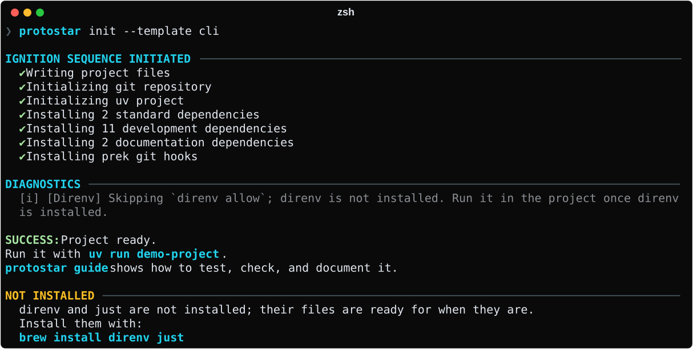

Troubleshooting & FAQ¶
This guide provides remediation steps for common operational errors, environment constraints, and editor integrations when using Protostar.
Missing Dependencies & Environment Checks¶
Protostar needs uv and git for every project, and checks for them before writing files or modifying configurations. If either is missing, execution halts with a MissingDependencyError whose hint is one command that installs everything missing. Installation covers installing both on each platform.
uv is not installed or not in $PATH¶
Protostar strongly recommends uv for high-velocity package resolution and environment management.
Verifying $PATH Resolution
If you installed tools via uv tool, ensure your shell's environment includes ~/.local/bin:
Tool Binaries (direnv, just)¶
A binary that only a selected tool runs never stops a run. The tool's files are still written, since they are correct whether or not the binary is installed. Protostar skips only the steps that need it, and ends its output with one command that installs every missing binary: without direnv, run direnv allow in the project once it is installed. The recipe editor marks such a tool not installed, and its preview and the change review list the step it skips.

The command comes from the package manager Protostar finds. Where it finds none, it links here instead:
Use sudo dnf install direnv on Fedora, or sudo pacman -S direnv on Arch. just installs with uv on every distribution: the same current release everywhere, with no sudo, including releases that don't package it, such as Debian 12.
direnv does nothing until it is hooked into your shell: add its hook line to your shell's startup file, open a new terminal, and run direnv allow in the project. From then on, entering the project's folder activates its virtual environment.
Working Offline¶
Installing packages needs the network: uv fetches them from the package index. Everything before that works offline, including the recipe editor, --dry-run, and the change review. Protostar doesn't test your connection before a run. A proxy or a private package index can make a probe wrong, and uv can install from its cache without the network.
- Before applying, the recipe editor and the change review say when Protostar couldn't reach the network. It noticed while fetching the latest git hook versions; without them, it pins the versions it shipped with.
- If
uvfails because it couldn't connect, the error says so, and the run rolls back as it does for any failed install. Reconnect and run the command again, or check your proxy or index settings. - With packages already in
uv's cache, setUV_OFFLINE=1souvinstalls from the cache instead of the network.
Workspace Collisions¶
When Protostar detects pre-existing files (such as an existing pyproject.toml or README.md) matching planned manifest targets in the target workspace, it raises a WorkspaceCollisionError to protect your existing work.
Workspace Collision: Protostar detected existing configuration files in the workspace.
- pyproject.toml
Interactive Resolution¶
In interactive terminals, you can choose from three strategies:
- Merge (Default): Reconciles previously managed TOML/YAML contributions (including GitHub Actions workflows) and line-merged generated files such as the
justfilewhile preserving unowned content, local edits, and deletions. It also appends missing rules to.gitignore. - Overwrite: Overwrites existing configuration keys with Protostar's baseline standards.
- Abort: Safely cancels the operation without making changes.
Automated Environments (CI/CD & Agents)¶
In non-interactive environments or when running with --json, interactive prompts are disabled. Pass explicit strategy flags to proceed:
# Safely reconcile an already managed workspace:
protostar init --template cli --force-merge
# Forcefully overwrite existing configs:
protostar init --template cli --force-replace
Remote Template Security Alerts¶
When you load a template you haven't marked trusted (--from, or an alias without trusted = true), Protostar lists every command the run executes under Untrusted template in the change review: setup commands such as git init, each dependency install, and the template's own tasks. They run in the files the template wrote, which can make them run its code, for example through a build hook uv add triggers. Apply stays disabled until you tick the checkbox confirming those commands, and only the commands you confirmed run. Without an interactive terminal, the run aborts with exit code 77; pass --trust to run the listed commands for that run only. protostar sync asks the same way when a template update needs uv add, uv lock, or a hook install.
Bypassing Prompts for Trusted Templates¶
To permanently trust a remote or team template and bypass security prompts:
- Run
protostar config --editto open your global settings in$EDITOR. - Register the template under the
[templates.<alias>]table withtrusted = true:
[templates.team-backend]
source = "https://raw.githubusercontent.com/YourOrg/standards/main/backend.toml"
name = "Team Backend"
description = "Internal FastAPI microservice template"
trusted = true
- Invoke it via shorthand:
protostar init --template team-backend. External templates configured withtrusted = truebypass interactive confirmation dialogs and execute cleanly in non-interactive CI/CD pipelines.
Template Variables That Look Like Credentials¶
Template variables are saved to your project's recipe and rendered into its files, so Protostar holds back a newly entered value that looks like a credential before anything is written:
The error names the variable and the gitleaks rule it matched, never the value. In --json mode the same pairs appear under error.findings. In an interactive terminal, a flagged --var value opens the variables screen instead of failing, so you can change it or keep it there.
- You entered a secret: enter a non-secret value instead, and supply the secret through the environment when the project runs.
- The template asks for a secret: the template needs fixing; see Variables Are Not Secrets.
- The value isn't a secret: keep it. In the editor, tick Not a secret; keep this value under the field. On the command line, add
--allow-secret NAMEfor that variable. The confirmation covers only that variable, and once the value is recorded, later runs don't ask again. If a rule flags ordinary values often, file an issue with the rule id and the value's shape (not the value).
Editor Schema Setup for Custom Templates¶
Protostar templates are pure TOML files validated against a JSON Schema. Configuring your editor provides instant autocompletion, hover tooltips, and real-time schema validation.
Export the schema from the Protostar you use, and keep it beside your template:
Export it again after upgrading Protostar, so the schema matches the template format that release reads.
VS Code & Cursor¶
- Install the Even Better TOML extension (
tamasfe.even-better-toml). - Add the schema modeline at the top of your
protostar.toml, pointing at the exported file:
#:schema ./protostar-template.schema.json
name = "my-custom-template"
dependencies = ["fastapi", "uvicorn"]
ruff = true
JetBrains (PyCharm / IntelliJ)¶
- Open Settings / Preferences $\to$ Languages & Frameworks $\to$ Schemas and DTDs $\to$ JSON Schema Mappings.
- Add a new mapping named
Protostar Template. - Set the schema file to the exported
protostar-template.schema.json. - Add the file pattern
*protostar*.toml.
Execution Interruptions & Rollback¶
If an error occurs or you press Ctrl+C mid-run, Protostar automatically restores your workspace.
Dedicated rollback guide
Full documentation on what gets restored, what might remain, RollbackFailedError remediation, and Ctrl+C behavior is in the Automatic Rollback guide.
Debugging & Bug Reporting¶
Verbose Debugging (--verbose)¶
To view full Python tracebacks and detailed debug logs, append -v or --verbose to any command:
Automated Crash Reporting¶
If Protostar encounters an unexpected internal error or AST parse failure:
- It traps the exception to prevent incomplete disk operations.
- It collects non-sensitive system environment details (OS, Python version, command invocation).
- It outputs a URL-encoded link that opens a pre-formatted GitHub issue ticket with the exact crash details attached.
Filing Bugs & Asking Questions¶
If you encounter an issue or behavior not covered in this guide:
- Search Existing Issues: Check the GitHub Issues tracker to see if a workaround or fix already exists.
- Open a Bug Report: If you've found a bug or unexpected behavior, open a new issue with your environment details and
--verboseoutput attached. - Ask a Question or Request a Feature: Open an issue for general questions and configuration help, or use the feature request form for ideas.
Related Resources¶
- Automatic Rollback: What gets restored, what might remain, and how to recover from a partial rollback failure.
- Error Handling Architecture: Deep dive into the domain exception hierarchy, POSIX exit codes, and subprocess diagnostics.
- Environment Initialization: Review collision handling, AST injection, and
--force-mergebehavior. - Global Configuration: Learn how to view, modify, or reset your global settings with
protostar config --reset.